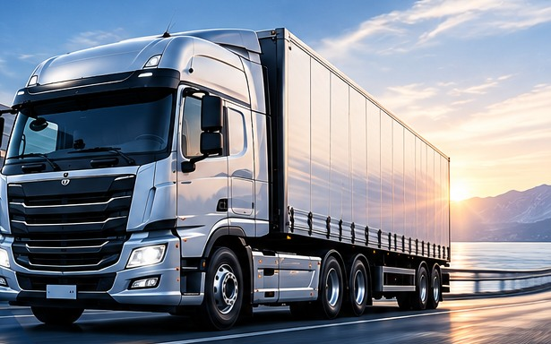

❄
프리미엄 히팅 옵션
히팅 시스템 적용 시 겨울철 저온 환경에서도 충전과 사용 안정성을 높입니다.
장거리 운행과 휴식시간에도 안정적으로 전력을 공급해 무시동 에어컨과 차량 내 전기장치 사용을 지원합니다.

시동을 끈 상태에서도 필요한 전력을 안정적으로 공급하도록 구성합니다.
히팅 시스템 적용 시 겨울철 저온 환경에서도 충전과 사용 안정성을 높입니다.
30A·50A 주행충전기 옵션으로 운행 중 보조배터리를 효율적으로 충전합니다.
3kW·5kW 인버터 옵션으로 에어컨과 차량 내 전기기기 사용을 지원합니다.
차종, 설치 공간, 배선과 사용 장비를 확인해 적합한 구성을 제안합니다.
현재 주요 판매 규격을 기준으로 정리했습니다.
| 제품군 | 배터리 종류 | MODEL | 셀 브랜드 | 전압(V) | 용량(Ah) | 납산 환산(Ah) | 에너지(Wh) | 히팅 옵션 | 충전 수명* |
|---|---|---|---|---|---|---|---|---|---|
| 트럭 무시동 | LFP | NE-24230 | EVE | 24 | 230 | 345 | 5,888 | 선택 | 6,000회 이상 |
| 트럭 무시동 | LFP | NE-24250 | EVE | 24 | 250 | 375 | 6,477 | 선택 | 6,000회 이상 |
| 트럭 무시동 | LFP | NE-24300 | EVE | 24 | 300 | 450 | 7,782 | 선택 | 6,000회 이상 |